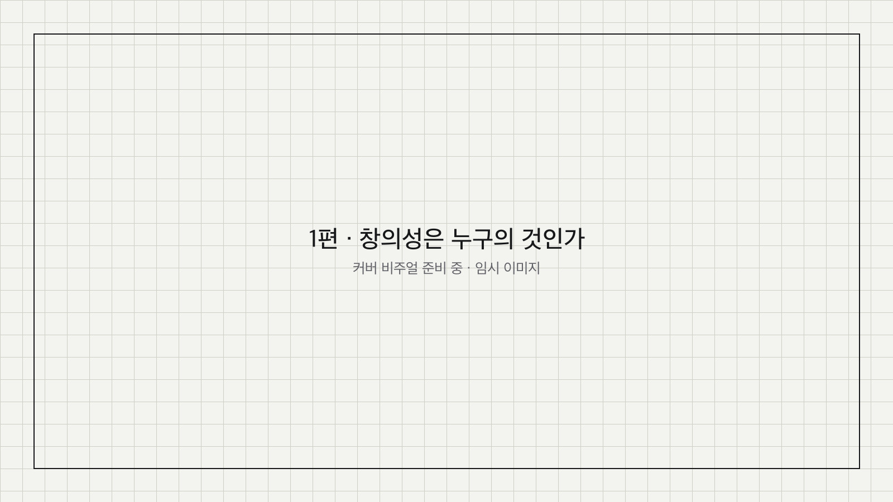
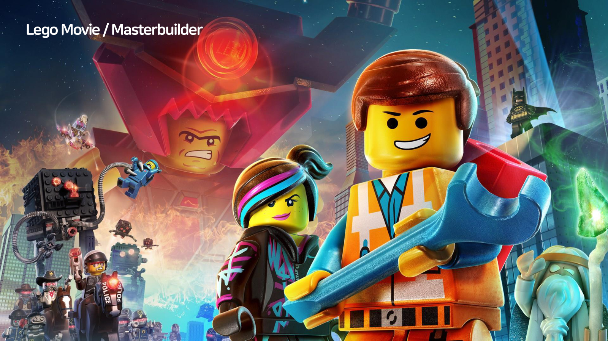
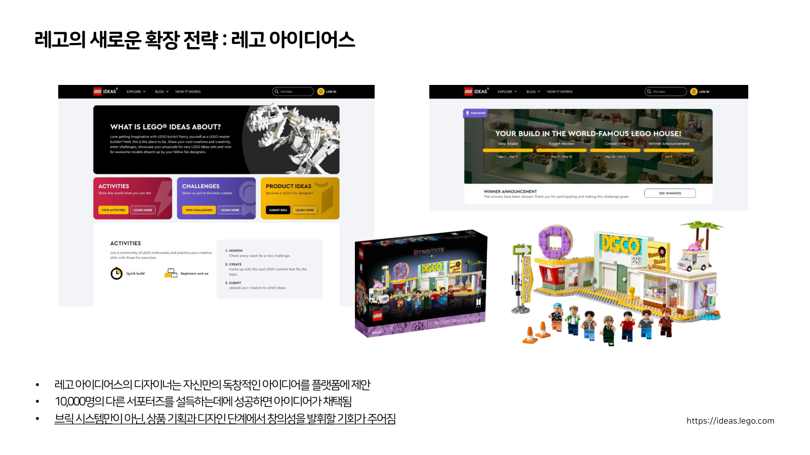
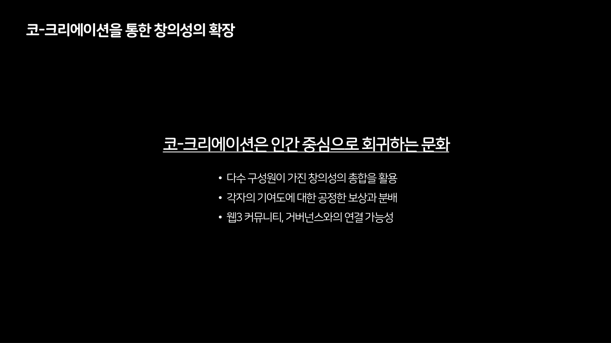
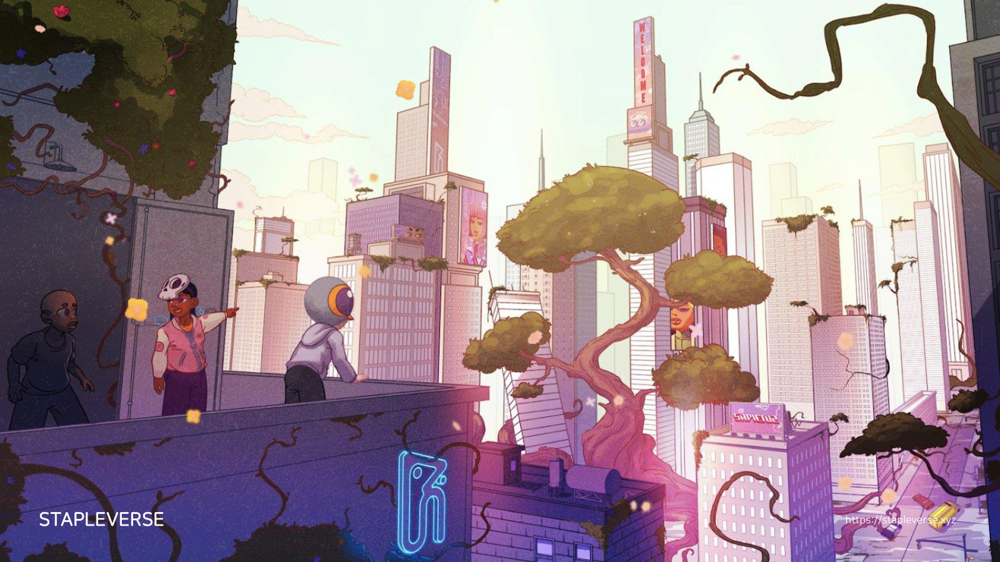
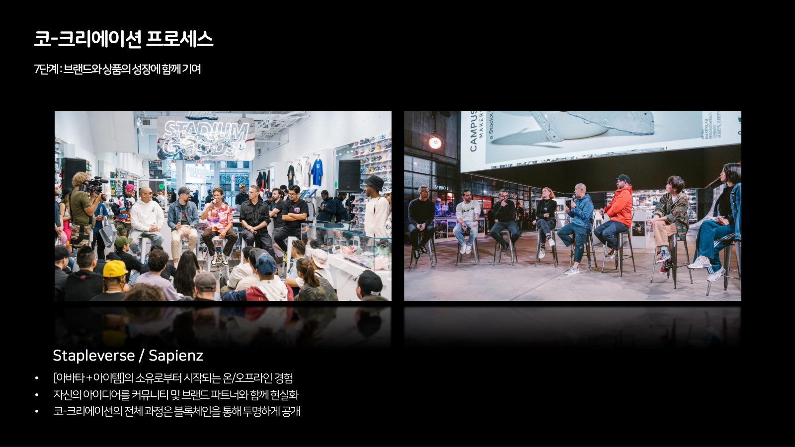
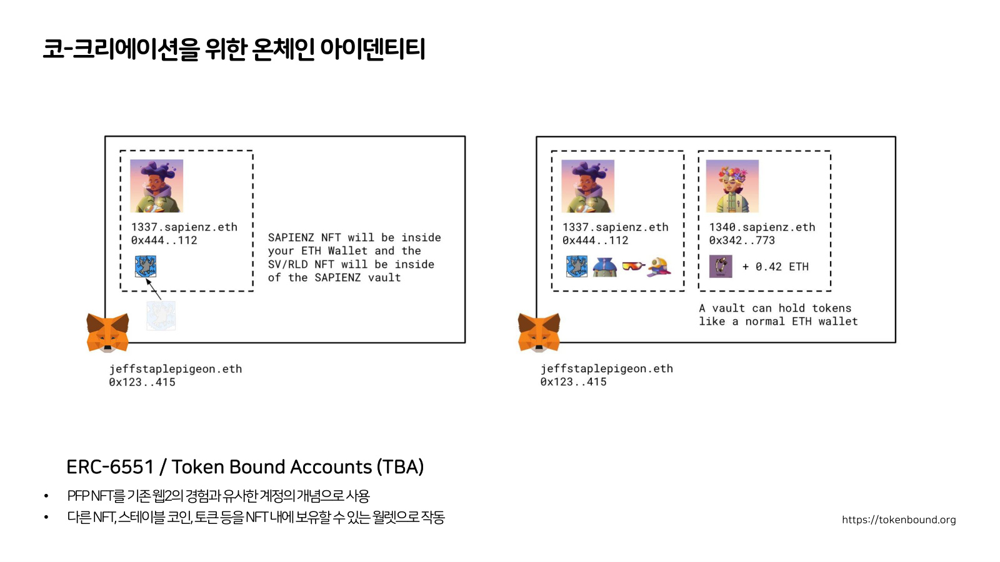

창의성은 누구의 것인가코-크리에이션 문화PART 1

2023년 6월 말, 나는 무대에서 코-크리에이션이라는 단어 하나를 들고 서 있었다. 하려던 말은 하나였다. 창의성은 원래 모두에게 주어져 있는데, 무언가를 만드는 자리에는 왜 늘 몇 사람만 앉게 되는가. 그 자리를 넓히려는 시도들이 그 무렵 여기저기서 벌어지고 있었고, 나는 그것들을 한자리에 모아놓고 보여주고 싶었다. 3년이 지나 그날의 기록을 다시 꺼냈다. 그때의 내가 무엇을 보고 있었고, 무엇을 이미 알고 있었고, 무엇을 아직 몰랐는지 한 번은 정리해두고 싶었다. 이 글은 그 정리의 첫 편이다.
시리즈 안내 : 이 글은 "코-크리에이션 문화" 1편이다. (1) 창의성은 누구의 것인가 (2) 경계면에서 (3) 기록이 이야기가 될 때 이 시리즈는 2023년 두 차례의 발표를 3년 뒤에 1인칭으로 다시 정리한 것이다.
01본드를 바르는 손
발표의 첫 사례를 레고무비로 열었다.
레고를 한 번도 만져보지 않은 사람은 드물다. 그런데 그 무렵 아이들이 레고를 만나는 경로는 예전과 달라져 있었다. 손에 쥐는 장난감으로만 만나는 게 아니라, 게임으로 만나기도 하고 극장에서 애니메이션으로 만나기도 한다. 물건이 먼저가 아니라 이야기가 먼저인 경우가 생긴 것이다. 그래서 나는 브릭 상자 대신 영화 한 장면을 첫 화면에 띄웠다.
2014년에 개봉한 그 영화에는 마스터빌더(Masterbuilder)라는 존재가 나온다. 설명서 없이, 눈앞에 있는 브릭만으로 필요한 것을 즉석에서 지어내는 사람이다. 주인공은 그런 존재가 되려 하고, 반대편에는 세상을 안정화시키고 고착화시키려는 악당이 있다. 그 대립이 영화의 뼈대다.
내가 그 장면을 가져온 이유는 영화 후반부의 반전 때문이었다. 화면 안에서 벌어지던 모든 일이 사실은 한 집의 아빠와 아이 사이에서 벌어지던 일이었다는 것이 밝혀진다. 아빠는 자기가 모아온 레고를 아이가 건드리는 걸 몹시 싫어한다. 순서대로 놓여 있어야 하고, 흩어지면 안 된다. 그래서 극단적으로는 브릭에 본드를 발라 다시는 분해되지 않게 만들려고 한다. 영화 전반부에 나오던 악당의 모습이 아이의 눈에 비친 아버지의 모습이었던 셈이다.
나는 무대에서 이 대목을 꽤 길게 설명했다. 그러고 나서 잠깐 멈췄다.
창의성이라는 말을 꺼낼 때 사람들은 보통 그것을 기르는 이야기부터 한다. 그런데 그 영화가 보여준 건 반대쪽이었다. 창의성은 이미 주어져 있고, 문제는 그것을 굳히려는 힘이 같은 집 안에 함께 있다는 것이다. 그리고 굳히려는 쪽이 악의를 가진 것도 아니다. 그는 그저 자기가 오래 공들여 만든 것이 흩어지지 않기를 바랄 뿐이다.
그때 내가 첫 챕터에 붙인 제목은 "모두에게 주어진 창의성"이었다. 지금 다시 읽으면 그 문장은 선언이라기보다 전제에 가깝다. 우리는 모두 무한한 창의성을 가지고 태어났고, 레고라는 장난감은 그 전제를 물건으로 만든 것이다. 그런데 그 전제 위에서 무슨 일이 벌어지는가. 그게 그날 내가 하고 싶었던 질문이었다.

02한 회사 안에 두 개의 전략이 있었다
레고는 한때 어려운 시기를 지났다. 그 회사가 다음 단계로 나아가기 위해 택한 길 중 하나가 외부 IP와의 결합이다. 스타워즈, 해리포터, 마블, 디즈니, 슈퍼마리오, 마인크래프트. 한 번쯤 본 적 있는 조합들이다. 여기에 아디다스, 이케아, 리바이스 같은 브랜드와의 협업이 더해져서, 의류 자체가 레고 테마를 가진 상품으로 나오기도 한다. 그렇게 만들어진 시리즈가 다시 영화가 되고 게임이 되면서 순환이 하나 완성된다.
나는 이 방향이 나쁘다고 생각하지 않았고, 무대에서도 그렇게 말했다. 내가 좋아하는 IP를 브릭 시스템 안에서 경험하는 일은 충분히 좋은 방향이다. 다만 한편에서는 불편함이 느껴진다고 덧붙였다. 헐크버스터나 밀레니엄 팔콘처럼 완성형이 정해져 있는 모델을 앞에 두면, 그 형태를 벗어나는 순간 뭔가 잘못 만든 것 같은 기분이 든다. 무한한 가능성을 팔던 물건이 정답이 있는 물건이 된다.
그래서 이 문제를 한 줄로 정리했다. 레고의 핵심 철학인 창의성과 협업 IP의 완결성이 충돌한다. 준비하면서 이 문장을 쓸 때는 사례를 하나 요약하는 기분이었는데, 3년이 지나 다시 보니 이 한 줄이 발표 전체의 축이었다. 뒤에 나오는 모든 사례가 결국 이 충돌을 어떻게 다루느냐의 변주였기 때문이다.

같은 회사가 반대편에서 하는 일이 레고 아이디어스다. 과거에는 이걸 크라우드 소싱이라고 불렀다. 아이디어를 가진 사람이면 누구나 자기가 생각하는 레고 컬렉션을 플랫폼에 제안할 수 있다. 자기가 보유한 다른 IP를 결합한 형태로 제안하는 것도 가능하다. 그 제안이 커뮤니티 안에서 1만 명의 서포터를 설득하는 데 성공하면 채택 심사로 넘어가고, 상품이 되어 판매될 가능성이 열린다.
여기서 한 단계가 더 있다. 그 단계에 들어가면 판매에서 발생하는 수익을 최초로 아이디어를 낸 사람과 나눈다. 제안을 받아주는 창구가 아니라 정산까지 붙어 있는 구조라는 뜻이다. 나는 이 지점을 눈여겨봤다. 참여를 열어두는 일과 그 참여를 계산해서 돌려주는 일은 전혀 다른 난이도의 문제인데, 이 브랜드는 오래전에 둘을 함께 처리해두고 있었다.
그때 내가 짚은 지점은 이랬다. 브릭 시스템 안에서만이 아니라 상품 기획과 디자인 단계에서 창의성을 발휘할 기회가 주어진다는 것. 이게 중요하다고 봤다. 브릭을 조립하는 창의성은 원래부터 사용자의 것이었다. 아이디어스가 옮긴 건 그다음 층, 그러니까 무엇을 만들 것인지를 정하는 자리다.

두 전략이 한 회사 안에 나란히 있다. 한쪽은 완결된 세계를 사와서 정확하게 재현하게 하고, 다른 한쪽은 사용자가 세계를 제안하게 한다. 나는 이걸 모순이라고 부르는 대신 긴장이라고 불러보고 싶다.
다만 아이디어스에도 문턱은 있다. 1만 명이라는 숫자다. 그 숫자를 모으지 못한 아이디어는 채택 심사까지 가지 못한다. 그리고 1만 명을 설득하는 일은 아이디어를 잘 만드는 일과 같은 종류의 일이 아닌 것 같다. 개방을 설계한다고 해도 어딘가에는 게이트가 놓이고, 그 게이트를 어디에 두느냐가 남는 질문이 된다.
03사람을 참여시키는 기술이라는 감각
레고 이야기 다음에 웹2에서 웹3로 넘어가는 구간을 뒀다. 지금 다시 보면 이 부분이 가장 시대를 타는 대목이다.
그때 나는 네 개의 키워드를 나열했다. 상호운용성(interoperability), 결합성(composability), 무신뢰성(trustless), 개방성(openness). 2023년에는 이 단어들이 설명이었고, 지금은 많이 닳았다. 그래서 이 네 단어를 여기서 다시 풀어 쓰지는 않겠다.
대신 그 앞뒤로 무대에서만 하고 지나간 말들이 있었다. 그쪽이 3년 뒤에 다시 읽을 만하다.
먼저 나는 그 시점의 혼란을 인정하고 들어갔다. 메타버스라는 개념이 등장한 뒤로 모두가 그것을 다르게 정의하고 있었다. 현실세계와 가상세계는 무엇인지, 피지컬 세계와 디지털 세계는 무엇인지에 대해서도 합의가 없었다. 나는 그 상태를 정리해주겠다고 말하지 않았다. 그냥 혼란스러운 상황에 있다고 말하고 넘어갔다.
그다음에 웹의 세대를 짧게 짚었다. 웹이 처음 등장했을 때 우리의 생활 방식이 바뀌었다. 장난감에서 게임으로, 그리고 지금 우리가 많은 시간을 보내는 스트리밍 플랫폼으로 옮겨온 흐름이 그것이다. 그리고 웹2라는 패러다임에서는 기존의 강자들이 플랫폼을 통해 질서를 아주 잘 짜인 형태로 고착화시켰다고 말했다. 어떻게 보면 자신들만의 질서를 우리 모두에게 강요하던 시기가 있었다고.
이 문장을 전사에서 다시 발견했을 때 잠깐 멈췄다. "고착화"라는 단어를 나는 그날 두 번 썼다. 한 번은 레고무비의 악당을 설명할 때, 한 번은 웹2를 설명할 때다. 준비하면서 의도한 반복은 아니었을 것이다. 그런데 같은 단어가 두 번 나왔다는 건, 내가 그날 사실은 하나의 이야기만 하고 있었다는 뜻이기도 하다. 굳히려는 힘에 대한 이야기다.
그리고 이어서 이렇게 말했다. 우리가 웹3에 다시 열광하게 되는 지점은 기술적인 부분만이 아니라 그것을 넘어선 문화적인 발전 방향성 쪽에 있는 게 아닐까 한다고.
그날 내가 가장 힘을 준 문장은 그다음에 나온다.
기술의 발전은 대체로 사람을 빼는 쪽으로 간다. 인공지능도, 사물인터넷도, 자율주행도 그렇다. 사람이 하던 자리를 기술이 대신하고, 사람은 그 바깥으로 밀려난다. 그런데 내가 그때 블록체인에서 느낀 성격은 반대였다. 그 기술은 사람을 오히려 참여시키고, 사람이 기술의 일부가 되게 한다. 기술 자체가 가진 기본적인 성격이 다르다고 말했다.
이 문장을 3년 뒤에 다시 읽는 기분은 묘하다. 나는 지금 대부분의 시간을 인공지능 쪽에서 보내고 있고, 그러니까 그때 내가 "사람을 빼는 기술"이라고 분류했던 쪽에 들어와 있다. 그런데 여기 들어와서 보니 그 분류가 그렇게 깔끔하지 않다. 같은 도구를 놓고도 어디까지 열어두느냐에 따라 사람이 들어오기도 하고 밖에 서 있게도 된다. 기술의 성격보다 그 위에 얹는 참여의 구조가 더 많은 것을 정하는지도 모르겠다.
04회귀라는 단어
코-크리에이션(co-creation)을 이렇게 정의했다. 다수 구성원이 가진 창의성의 총합을 활용한다. 각자의 기여도에 공정하게 보상하고 분배한다. 그리고 웹3 커뮤니티, 거버넌스와 연결될 가능성을 연다.
그리고 이 정의에 제목처럼 한 문장을 붙였다. 코-크리에이션은 인간 중심으로 회귀하는 문화.
발표를 준비하면서 이 문장을 여러 번 고쳤던 기억이 난다. 마음에 걸렸던 건 "회귀"라는 단어였다. 새로운 기술 이야기를 하면서 돌아간다고 쓰는 게 이상하지 않을까 싶었다. 그런데 결국 그 단어를 남겼다. 앞으로 나아가는 문화라고 쓰면 그건 그냥 다른 유행어와 구분되지 않을 것 같았다.
지금 보면 셋 중에서 마지막 것만 시대를 탔다. 앞의 둘에는 기술 이름이 하나도 들어 있지 않다. 여러 사람의 창의성을 합쳐서 쓴다는 것과, 각자가 기여한 만큼 정직하게 나눈다는 것. 이 두 문장은 블록체인이 있든 없든, 생성형 모델이 있든 없든 그대로 남는 문제다. 오히려 지금이 더 어려워졌다. 무엇이 누구의 기여인지 구분하기가 그때보다 훨씬 힘들어졌기 때문이다.

이 정의를 왜 그 자리에 놓았는지는 발표 서두에 이미 밝혀두었다. 나는 발표를 열면서, 그 이틀 동안 여러 세션을 들으신 분들이라면 코-크리에이션이라는 단어가 반복해서 등장하는 것을 들으셨을 거라고 말했다. 그만큼 시의성 있는 키워드였다는 뜻이다. 그래서 다른 발표자들과 조금 다르게 가기로 했다고 덧붙였다. 개념적으로도 기술적으로도 가지 않고, 사례를 최대한 많이 보여주는 쪽을 택했다.
그 선택이 발표의 성격을 정했다. 대부분의 시간이 남이 한 일을 보여주는 데 쓰였다. 3년 뒤에 다시 열어보니 그 점이 가장 먼저 눈에 들어왔다. 챕터 대부분이 다른 사람들의 프로젝트를 순서대로 도는 구성이다. 그래서 이 글은 그 순서를 그대로 따라가는 대신, 그때 내가 무엇을 보고 그렇게 배열했는지를 따라가려고 한다.
05비둘기 한 마리의 26년
첫 사례는 비둘기였다. 화면에 비둘기 사진을 띄우고 나는 이 비둘기가 상당히 특별한 비둘기라고 말했다.
패션 쪽에 있는 사람이라면 제프 스테이플이라는 이름을 알 것이다. 그가 1997년에 만든 브랜드가 스테이플 피존이고, 그 브랜드의 상징이 뉴욕의 비둘기다. 그가 나이키 덩크와 협업해 만든 신발은 미국에서 사람들이 한정판을 사려고 줄을 서게 만들었고, 그 줄에서 유혈 사태가 벌어져 경찰이 출동한 일로 남았다. 지금은 한정판 앞에 줄이 서는 게 일상적인 풍경이지만, 그때는 그것이 사건이었다.
그 사이에 신발의 지위가 바뀌었다. 신는 물건이었다가, 수집품이 됐다가, 일상적으로 지불할 수 있는 범위를 훨씬 넘어서는 가격표가 붙는 물건이 됐다. 스니커즈가 예술품과 비슷한 자리에 올라간 것이다. 한 사람이 만든 하나의 상징이 그 변화의 한복판에 있었다.

2021년에 그는 RTFKT라는 팀과 함께 메타 피존을 만들었다. 비둘기를 모티브로 한 가상의 스니커즈다. 무대에서 나는 이걸 두고 당시 NFT 시장에서 조상 같은 존재라고 표현했다. 메타 피존을 가지고 있던 사람들이 나중에 CloneX를 에어드랍으로 받았고, 그것이 또 다른 컬렉션들로 이어졌기 때문이다. 이 신발은 실물로도 제작돼서 리셀 플랫폼에서 높은 가격에 거래됐다.
2022년에는 스테이플버스라는 자기 세계관을 만들었다. 그 첫 챕터가 Empire Staple Pigeonz다. 여기서 벌어지는 일이 재미있다. 비둘기가 먹는 모이를 수집하면 비둘기가 태어나고, 비둘기의 배설물이 미술품이 된다. 세계관이라는 말이 무겁게 들릴 수 있는데, 실제로 그 안에서 벌어지는 건 이런 종류의 위트다. 그리고 그 위트가 커뮤니티를 뭉치게 했다.
그 뒤로는 그가 원래 하던 문법이 그대로 이어졌다. 패션 업계의 여러 브랜드와 협업하고, 그 결과를 커뮤니티에게 혜택으로 돌려주는 방식이다. 스니커즈만이 아니라 시계 브랜드와도, 인형과도 협업이 이어졌다. 그리고 아티스트와 크리에이터들과의 협업으로 넘어가면서 비둘기라는 상징 자체가 다른 사람들의 재료가 됐다. 한 사람만의 아이코닉한 이미지가 여러 손을 거치며 다른 포맷의 결과물로 번져나갔다.
그때 나는 이 두 갈래를 따로 떼어 정리했다. 하나는 브랜드와의 협업이고, 다른 하나는 크리에이터와의 협업이다. 사례를 나열하려고 나눈 구분이라고 생각했는데, 지금 보면 둘이 가리키는 것은 성격이 다른 일이다. 앞쪽은 상징을 빌려주는 일이고, 뒤쪽은 상징을 남의 손에 놓아두는 일에 가깝다. 빌려줄 때는 그 상징이 어떤 모습으로 쓰일지 원래 주인이 계속 관리한다. 놓아두는 쪽은 그렇지 않다. 손을 떠난 뒤에 무엇이 될지는 만든 사람도 알 수 없다. 비둘기가 26년을 버틴 건 아마 뒤쪽을 허용했기 때문일 것이다.
그 궤적을 1997, 2021, 2022, 2023이라는 네 개의 연도로 늘어놓고, 무엇이 변했는지를 이렇게 요약했다. 단독 브랜드에서 다수 브랜드·크리에이터와의 협업으로. 피지컬 현실세계 경험에서 디지털 가상세계 경험으로. 프로젝트 세계관 구축으로.
26년이다. 한 사람이 만든 브랜드가 26년에 걸쳐 매체를 갈아탄 궤적을 네 칸으로 압축한 표였다. 나는 이 표를 만들면서 웹3 이야기를 하고 있다고 생각했는데, 지금 다시 보면 웹3라는 단어를 다 지워도 이 표는 그대로 읽힌다. 브랜드가 자기 상징 하나를 오래 붙들고 있으면 매체가 바뀌어도 옮겨 탈 것이 남는다는 이야기다.

06편을 나누면 참여는 고르지 않다
그날 무대에서 읽지 않고 지나간 것 중에 클랜 이야기가 있다.
Empire Staple Pigeonz는 참여자를 세 개의 클랜으로 나눴다. HOOD SQUAD, FEED CLAN, POOP GANG. 어느 NFT를 갖느냐에 따라 클랜의 혜택과 스토리라인, 그리고 이후 로드맵에서 만나게 될 것들이 달라지는 구조다. 전체 NFT는 1만 개였다.
갈라지는 방식은 이렇다. 모이를 맡은 FEED CLAN에서 두 갈래가 아래로 뻗고, 한쪽 끝에 비둘기들의 HOOD SQUAD가, 다른 쪽 끝에 배설물의 POOP GANG이 놓인다. 발표하던 무렵의 진행률은 HOOD SQUAD가 목표 6,000 중 3,900으로 65퍼센트, POOP GANG이 목표 5,000 중 1,700으로 35퍼센트였다.
이 숫자를 무대에서 읽지 않은 건 아마 시간 때문이었을 것이다. 그런데 3년이 지나 다시 훑다가 여기서 오래 멈췄다. 편을 갈라놓으면 참여가 고르게 퍼지지 않는다는 것을 보여주는 드문 정량 기록이기 때문이다. 목표 수량부터 6,000과 5,000으로 달랐고, 채워진 비율은 65퍼센트와 35퍼센트로 갈렸다. 같은 세계관, 같은 시기, 비슷한 규모의 목표를 놓고도 한쪽은 절반을 훌쩍 넘겼고 다른 쪽은 셋 중 하나에 그쳤다.
커뮤니티를 편으로 나누는 설계는 대개 참여를 늘리려고 한다. 소속이 생기면 사람이 더 오래 머무른다는 계산이다. 그런데 나누는 순간 어느 쪽이 인기 있는지가 드러나고, 그 격차 자체가 다음 사람의 선택에 영향을 주는 정보가 된다. 뒤늦게 들어온 사람은 비어 있는 쪽을 채우러 가지 않는다. 이미 많은 쪽으로 간다.
물론 여기까지가 이 숫자로 알 수 있는 전부다. 클랜은 셋인데 비율은 둘뿐이고, 모이를 맡은 FEED CLAN에는 진행률이 붙어 있지 않다. 언제의 스냅샷인지도 알 수 없다. 그래도 커뮤니티를 설계할 때 편을 나누는 일이 어떤 결과를 만드는지에 대해서는, 이 두 숫자가 그날 내가 준비한 어떤 도식보다 구체적이었다.

07100년 뒤의 뉴욕에 사는 사람들
스테이플버스의 세계관 이미지는 100년 뒤의 뉴욕을 그린 것이다. 무너진 건물 위로 식물이 올라오고, 그 사이를 사람들이 걸어다닌다. 무대에서 나는 이 컬렉션이 100년 뒤 뉴욕의 사람들이 어떤 옷을 입고 다닐까에 대한 상상에서 출발했다고 설명했다. 그 안에서 살아가는 인류를 SAPIENZ라고 부른다.
이 컬렉션이 프로필 NFT에 해당한다. 여기서 나는 한 가지를 강조했다. 이 캐릭터들은 옷을 하나하나 갈아입을 수 있게 되어 있고, 의류 한 벌과 액세서리 하나까지 전부 개별 항목으로 정의되어 있다. 그런데 그것들이 단순히 외형만 결정하는 게 아니다. 신원과 자격 같은 다른 층위가 거기에 붙는다.
옷이 자격이 된다는 말은 낯설게 들리지만, 생각해보면 우리는 이미 그런 세계에 오래 살았다. 유니폼이 그렇고 배지가 그렇고 회원증이 그렇다. 여기서 달라진 건 그 자격이 옷 자체에 붙어서 옷과 함께 옮겨다닌다는 점이다.
지금 생각하면 이 대목이 발표의 실질적인 전환점이었다. 그전까지는 브랜드가 가상 세계로 확장하는 이야기였고, 여기서부터는 소유가 참여의 입구가 되는 이야기가 시작된다.

08일곱 단계
그날 유일하게 남의 것을 구경한 게 아니라 직접 설계해서 가져간 것이 있다. 코-크리에이션 프로세스라는 이름으로 일곱 단계에 걸쳐 쌓아 올린 표다. SAPIENZ를 사례로 삼았지만, 실제로는 커뮤니티를 어떻게 들여보내고 어디까지 데려갈 것인가에 대한 내 나름의 정리였다.
1단계는 프로필 NFT를 통한 계정 소유다. 아바타 하나와 아이템들을 갖는 데서 시작한다. 이 [아바타 + 아이템] 시스템을 통해 패션, 푸드, 아트, 뮤직, 디자인, 토이로 경험이 확장된다고 봤다. 그리고 그 바탕에 이더리움 ERC-6551 표준인 Token Bound Accounts를 두었다.

2단계는 그 소유가 워크샵 참여 자격이 되는 단계다. 3단계는 워크샵 안에서 실습과 멘토링을 받는 단계다. 무대에서 나는 여기서 말하는 워크샵이 온라인과 오프라인을 넘나들면서 사람들과 함께 무언가를 만들고 배우는 형태라고 설명했다. 실제로 돌아가던 프로그램도 함께 보여줬다. 어패럴 디자인은 진행 중이었고, 비트 프로덕션과 그래픽 디자인은 이미 끝나 있었다. 어패럴 디자인에는 수강 30명, 브랜드 파트너 2곳이 붙어 있었고, 셋 모두 홀더 전용이라는 조건이 걸려 있었다. 이 단계표에서 실제 규모를 짐작하게 해주는 몇 안 되는 숫자다.
4단계는 워크샵을 수료한 사람이 학기제 프로그램에 선발되는 단계다. 여기서부터 더 좁은 멤버십이 열린다. 전문적인 배움의 기회가 주어지고, 디자인 프로세스와 브랜드를 만들어가는 과정에 직접 참여할 수 있고, 거기에 투표할 수 있게 된다.
5단계가 배움, 참여, 투표를 통해 실제로 코-크리에이션에 참여하는 단계다. 6단계는 전 세계 분야별 전문가와 유명 브랜드와의 협업이다. 제프 스테이플처럼 오래 일한 사람에게는 업계의 네트워크가 있고, 그가 그 연결을 커뮤니티에게 열어준다는 이야기였다. 자기가 지금까지 협업해온 브랜드들과 만나는 지점도 함께 제공된다.
7단계는 브랜드와 상품의 성장에 함께 기여하는 단계다. 무대에서 나는 이 단계를 이렇게 정리했다. 이제 이 브랜드는 특정한 누군가에 의해 만들어진 것이 아니라, 처음의 홀더들이 포함된 여러 주체가 함께 만들어가는 브랜드가 되어 함께 성장한다고.

일곱 단계 전부에 같은 원칙 셋을 깔아두었다. [아바타 + 아이템]의 소유로부터 시작되는 온·오프라인 경험. 자신의 아이디어를 커뮤니티 및 브랜드 파트너와 함께 현실화. 코-크리에이션의 전체 과정은 블록체인을 통해 투명하게 공개.
마지막 하나가 지금 보면 가장 야심 찬 조항이다. 과정을 투명하게 공개하겠다는 것은, 누가 언제 무엇을 했는지를 나중에 되짚을 수 있게 남기겠다는 뜻이다. 그게 있어야 정산이 가능하다. 창작의 자리를 여러 명에게 나눠주는 설계는 결국 이 기록 문제로 수렴한다. 나눌 몫을 정하려면 먼저 무엇이 있었는지 셀 수 있어야 하고, 세려면 남아 있어야 한다. 이 시리즈의 3편이 그 이야기를 이어받는다.
이 단계표에 붙어 있던 실제 이벤트도 하나 있었다. 매직 화이트 티 챌린지다. 평범한 흰 티셔츠 하나를 커뮤니티에 나눠주고, 그것을 첫 코-크리에이션 이벤트의 열쇠로 삼았다. 참여자들은 그 티셔츠 위에 디자인을 얹고, 서로의 안을 놓고 토너먼트처럼 투표하고, 그 결과가 SAPIENZ의 모습에 반영된다. 대진은 스위트 식스틴으로 짜였다. 내가 들여다본 한 매치에서는 두 후보의 득표가 28.6퍼센트와 71.4퍼센트로 갈렸고, 합쳐서 84표, 마감까지 네 시간이 남아 있었다. 그 숫자가 이 이벤트의 실제 크기였다.
나는 흰 티셔츠라는 선택이 좋았다. 세계관이니 온체인이니 하는 말을 다 걷어내도, 가장 흔한 물건 하나를 참여의 입구로 놓는 발상은 그 자체로 성립한다. 무엇을 만들지 정해주지 않고 바탕만 건네는 방식이기도 하다. 앞에서 말한 완성형 모델의 반대편에 흰 티셔츠가 있다.
09열여덟 살의 화가
두 번째 사례는 Fewocious였다. 내가 그를 처음 알게 됐을 때 그는 열여덟이었고, 발표하던 시점에는 스무 살쯤이었던 것으로 기억한다. 웹3와 아트 씬에서 크게 주목받던 신인이다.
그가 만든 세계가 FewoWorld다. 여기서 그는 자기 작업의 물성 자체를 먼저 팔았다. 최초의 재료, 그러니까 물감이다. 물감이 개별 항목으로 정의되어 있고, 그것을 수집한 사람들이 페인트 파티라는 자리에 참여한다. 도시를 옮겨 다니며 열리고, 그 자리에서 한 번씩 새 컬렉션이 생성된다. 그 과정에 물감을 가진 사람들이 직접 붓을 대서 함께 그림을 만든다.
나는 이 구조가 코-크리에이션의 가장 단순한 형태라고 봤다. 그때 가장 주목받던 작가와 함께 작품을 만드는 과정에 들어갈 수 있다는 것. 결과물의 지분이 아니라 그 과정의 자리를 파는 것이다.
2021년 뉴욕에서 열린 자리에서는 여섯 장의 캔버스가 번호를 달고 나란히 놓였다. 한 도시에서 한 장이 아니라 여섯 장이 동시에 채워진 것이다. 물감을 항목으로 쪼개 팔았기 때문에 그 여섯 장에 붓을 댈 자격도 그만큼 쪼개져 있었다.

그 뒤에 아디다스와의 협업으로 실제 스니커즈 컬렉션이 나왔다. 발표하던 무렵 막 판매가 시작된 물건이었다. 가상에서 만들어진 캐릭터가 현실의 상품이 되어 매대에 올라간 것이다. 발표에서는 이 흐름을 붙여놓고 빠르게 지나갔는데, 지금 보면 그 사이의 거리가 이 발표의 절반쯤을 설명한다. 물감이라는 재료에서 출발한 것이 신발이라는 물건까지 왔고, 그 사이의 어느 지점에서 참여자와 구매자를 나누던 선이 이미 지워져 있었다.
10만든 사람도 올린 사람도 아닌데
발표 후반에 나는 사례 하나를 내 경험으로 이야기했다. 그 플랫폼의 화면을 순서대로 넘기면서, 그 위에 내가 직접 사보고 겪은 것을 얹었다.
디지털 의류를 만드는 한 스튜디오의 웹사이트에서 옷을 사보기로 했다. 여기서 구매는 완성품을 고르는 일이 아니었다. 크리에이터들이 만들어둔 형태와 패턴과 색을 내가 조합하고, 마지막에 버튼을 눌러 발행한다. 그렇게 하면 내가 선택한 그 조합은 다른 사람이 다시 선택할 수 없는 것이 된다.
산 직후에는 무엇을 샀는지 알 수 없다. 정해진 시각에 한꺼번에 공개되고, 그때 내가 가진 게 어떤 아이템인지 드러난다. 희귀도는 다섯 등급으로 나뉘어 있었다. 가장 흔한 등급이 33퍼센트, 그다음이 20퍼센트, 11퍼센트, 4퍼센트, 그리고 가장 드문 등급이 1퍼센트다. 등급에 따라 나중에 열리는 것들도 달라진다. 아래쪽 등급에도 증강현실 필터와 전용 채널은 열리지만, 메타버스 웨어러블 같은 항목은 위쪽 등급에만 체크가 되어 있었다. 소유하기까지 시간이 꽤 걸리고, 그 기다리는 시간을 어떻게 즐겁게 만들 것인가를 두고 플랫폼이 이런저런 장치를 붙여둔 게 보였다. 공개된 뒤에는 3D 모델을 내려받을 수 있고, 증강현실로 몸에 걸쳐서 찍어 올릴 수도 있었다.
그다음이 내가 오래 들여다본 화면이다. 이 아이템을 2차 시장에 내놓으려고 판매 등록 창까지 들어갔더니, 판매가 성사될 경우 수익이 어떻게 쪼개지는지가 미리 계산되어 있었다. 로열티 계산기라는 이름이 붙어 있었고, 가격을 적어 넣자 그 아래에 네 줄이 떴다. 옷의 형태를 만든 디자이너에게 30퍼센트, 소재를 만든 디자이너에게 30퍼센트, 플랫폼에 10퍼센트, 그리고 판매자인 나에게 30퍼센트. 판매하기 전에 이미 계산이 끝나 있는 화면이었고, 그 목록에 나도 들어 있었다.
나는 그 플랫폼을 만든 사람이 아니다. 그들과 함께 프로젝트를 올린 사람도 아니다. 내가 한 일은 몇 가지를 고르고 버튼을 누른 것뿐이다. 그런데 그 조합을 확정한 행위가 기여로 계산되어서, 구매자인 나에게 코-크리에이터라는 자격이 붙었다. 이후에 이 아이템이 두 번, 세 번 거래될 때마다 나에게도 몫이 돌아온다.
지금 돌아보면 그날 내가 가장 하고 싶었던 말이 여기 있었던 것 같다. 창의성을 나눈다는 말은 보통 만드는 사람들 사이의 이야기로 들린다. 그런데 여기서는 고르는 일도 한 마디로 계산되고 있었다. 창작과 소비 사이의 선이 그어져 있던 자리가 조금 흐려진 것이다. 앞에서 본 레고 아이디어스가 제안하는 사람에게 몫을 돌려줬다면, 여기서는 고르는 사람에게까지 그 명단이 넓어져 있었다. 문턱을 낮추는 방향으로 한 칸 더 간 셈이다.
3년이 지난 지금, 저렇게 자동으로 흘러가는 정산 장치가 그때 그림대로 남았는지는 다른 이야기다. 다만 그 화면을 처음 봤을 때의 감각은 아직 남아 있다. 나는 그날 무언가를 만들지 않고도 만든 쪽 명단에 올라가 봤다.
113년 뒤에 다시 읽는 일곱 단계
이 발표의 마지막 근거는 온체인 아이덴티티였다. ERC-6551, 그러니까 Token Bound Accounts다. 프로필 NFT를 기존 웹2의 계정과 비슷한 개념으로 쓰고, 그 NFT 자체가 다른 항목과 자산을 담는 지갑처럼 작동하게 하는 방식이다.
무대에서 나는 여기까지 오는 경로를 짧게 정리했다. 처음에 이 물건들은 희소성으로 설명됐다. 그런데 희소성만으로는 수요가 충분히 만들어지지 않는 시점이 왔고, 그래서 유틸리티를 얹고 온라인과 오프라인의 인터랙션을 만들어내는 과정이 이어졌다. 그다음 단계는 무엇일까. 나는 아이덴티티와 멤버십이라고 봤다.
자산 쪽으로도 비슷한 계단이 있었다. 중앙화된 거래소에 자산을 맡겨두는 것은 사실 블록체인 위에서의 소유가 아니다. 거기서 한 칸 나아가면 개인 지갑 안에 직접 갖게 되고, 그다음에 스마트 컨트랙트로 동작하는 지갑이라는 기술이 자라고 있었다. 무대에서는 칸마다 실제 거래소와 지갑 이름을 하나씩 들어 설명했다. ERC-6551은 이 두 계단, 그러니까 아이덴티티와 멤버십 쪽의 흐름과 스마트 컨트랙트 지갑 쪽의 흐름을 하나로 묶는 방식이었다.
이 구조는 상자 두 개로 그려두었다. 한쪽에는 지갑 하나가 있고 그 안에 사피엔즈 NFT가 들어 있고, 다시 그 NFT 안에 아이템 하나가 들어가 있다. 다른 쪽에는 같은 구조에 아이템 네 개가 붙어 있고, 그 옆의 두 번째 아바타는 소액의 이더까지 담고 있다. 아바타가 보통의 지갑처럼 토큰을 가질 수 있다는 뜻이다. 상자 안에 상자가 들어가는 그림 하나로 설명이 끝나는 구조였다.
그래서 이전까지는 계정 따로, 지갑 따로, 소유한 자산 따로였다면 이제는 내 아바타가 곧 지갑이 되고 계정이 된다고 설명했다. 그 안에 다른 것들을 담을 수 있다. 웹2에서 우리가 이미 익숙한 직관적인 개념으로 경험이 바뀐다고. 그리고 앞으로 코-크리에이션을 만들어갈 때 온체인 아이덴티티가 점점 중요해질 것이라고 말했다. 2023년 6월의 나는 그렇게 봤다.

3년이 지난 지금, 그 표준이 대중이 쓰는 계정의 개념이 되었다고 말하기는 어려울 것 같다. 그렇다고 이 대목을 통째로 지우고 싶지는 않다. 여기서 내가 붙들고 있던 것은 표준의 번호가 아니라, 아바타 하나에 소지품과 이력이 계속 달라붙는다는 그림이었다.
일곱 단계로 돌아가서, 어느 칸이 개념으로 남았는지 정리해본다.
2단계부터 4단계까지, 그러니까 소유를 증명해야 워크샵에 들어가고 수료해야 다음 자리로 올라가는 구간은 지금 그대로 옮겨 쓰기 어려워 보인다. 그때 나는 이 구조를 자격과 멤버십의 언어로 봤다. 지금은 같은 구조가 문턱의 언어로 읽힌다.
반대로 5단계부터 7단계는 소유 증명을 걷어내도 그대로 성립한다. 배우고, 투표하고, 전문가와 연결되고, 결과의 성장에 함께 얹히는 것. 이건 커뮤니티 운영의 오래된 문법이고, 지금 어느 도구를 써도 다시 지을 수 있다.
그리고 1단계가 남는다. 계정을 갖는 일. 이 칸은 아직 답이 정해지지 않은 것 같다. 무언가를 함께 만들려면 누가 무엇을 얼마나 했는지 셀 수 있어야 하고, 그러려면 세는 단위가 있어야 한다. 그 단위를 무엇으로 삼을지에 대해 2023년의 나는 하나의 답을 갖고 있었고, 지금은 그 답이 그때만큼 확실하지 않다. 질문 자체는 그때보다 커졌다.
레고 아이디어스의 1만 명과 이 발표의 소유 증명은 결국 같은 자리에 놓인 물건이다. 앞에서 게이트를 어디에 두느냐가 남는 질문이라고 썼는데, 나는 그 질문에 소유라는 답을 적어둔 셈이다. 2023년의 나는 그 답을 자격이라고 읽었고, 지금은 문턱이라고도 읽는다. 답이 틀렸다기보다, 답 하나로 두 가지가 동시에 일어난다는 것을 그때는 덜 따져봤다.
12창의성은 누구의 것인가
발표를 닫으면서 나는 일곱 개의 챕터 제목을 다시 늘어놓았다. 모두에게 주어진 창의성. 코-크리에이션을 통한 창의성의 확장. 흐릿해지는 현실과 가상의 경계. 코-크리에이션 플랫폼으로의 발전. 코-크리에이션을 통한 수익 창출. 제너레이티브 AI 시대의 새로운 방향성. 웹3를 통한 지속가능한 거버넌스 구축.
그리고 한 번씩 머릿속으로 읽어보시라는 말로 끝냈다. 결론 문장을 따로 두지 않았다. 그때는 사례를 충분히 보여주면 구조가 결론을 대신할 거라고 생각했다.
이 글은 그 목록의 앞쪽 두 칸을 다뤘다. 세 번째 칸, 그러니까 현실과 가상의 경계가 흐릿해지는 구간은 이 시리즈의 2편으로 넘긴다. 여섯 번째 칸은 그때 가장 짧고 가장 비어 있던 챕터인데, 3년이 지난 지금 다시 보면 그 얇은 챕터가 다음 문이 어디 있는지를 가리키고 있었다. 그 이야기는 3편에서 한다.
3년이 지나 결론 자리에 문장을 하나 놓아본다면, 첫 장에서 가져온 그 영화로 돌아가게 된다.
본드를 바르는 손은 나쁜 손이 아니라 지키려는 손이다. 오래 만든 것이 흩어지지 않기를 바라는 마음은 어느 브랜드에나 있고, 나에게도 있다. 완결된 세계를 사와서 정확하게 재현하게 하는 전략도 그 마음에서 나온다. 문제는 그 손이 유일한 손이 될 때다.
레고 아이디어스에 아이디어를 올린 사람, 흰 티셔츠 위에 자기 디자인을 얹은 사람, 물감을 들고 남의 캔버스에 붓을 댄 사람, 그리고 그저 몇 가지를 고르고 버튼을 누른 나. 이들이 하는 일의 크기는 전부 다르다. 그런데 창의성이 모두에게 주어져 있다는 말이 참이라면, 이들을 창작자와 소비자로 나누던 선은 계속 애매해질 수밖에 없다. 2023년 6월에 내가 본 것은 그 선이 흐려지는 초기 장면이었다.
그날 무대에서 나는 이 흐름의 이름을 웹3라고 불렀다. 지금은 그 이름이 그리 중요하지 않다는 걸 안다. 이름이 무엇이든, 만드는 자리에 몇 명이 앉을 수 있는가라는 질문은 그대로 남는다. 그리고 그 자리를 넓히는 일은 기술이 저절로 해주지 않는다. 누군가 문턱의 높이를 정하고, 기여를 세는 방법을 정하고, 나눌 몫을 정해야 한다. 전부 사람이 하는 일이다.
그래서 그때 적어둔 문장 하나를 지금도 지우지 못하고 있다. 코-크리에이션은 인간 중심으로 회귀하는 문화라는 문장이다. 기술 스택은 여러 번 갈아엎였는데 저 문장만 자리를 지키고 있다. 어쩌면 저건 예측이 아니라 다짐 같은 것이었는지도 모르겠다.